소음진동기사(구) (2015-03-08 기출문제)
1과목: 소음진동개론
1. 반자유공간에 있는 0.45W의 소형 점음원(point source)으로부터 10m떨어진 지점의 음의 세기(w/m2)는?
- 7.16 × 10-4
- 3.58 × 10-4
- 7.16 × 10-3
- 1.43 × 10-2
(정답률: 알수없음)

2. 음파에 대한 일반적인 성질로 옳지 않은 것은?
- 대기의 온도차에 의한 경우 주간(지표부근의 온도가 상공보다 고온)에는 보통 지표 쪽으로 굴절한다.
- 음원보다 상공의 풍속이 클 때 풍하 측에서는 지면 쪽으로 굴절한다.
- 낮은 주파수의 음은 고주파수 음에 비해 회절하기 쉽다.
- 음의 굴절현상은 Snell의 법칙으로 설명될 수 있다.
(정답률: 알수없음)
3. 소음성 난청의 특성에 관한 다음 설명 중 가장 거리가 먼 것은?
- 장기가 큰 소음을 유발하는 직장에서 일한 사람은 특히 4000H 부근에서의 청력 손실이 현저하다.
- 난청이 진행되면서 C5의 양측 주파수에서 청력손실이 커서 노화됨에 따라 낮은 주파수의 청력손실이 커지고 C5부근에 집중되어 dip은 점점 분명해진다.
- C5 dip은 약의 부작용 등의 원인에 의해서도 일어나는 수가 있다.
- 소음성 난청은 내이의 세포변성이 주요한 원인이며, 이 경우 음이 강해짐에 따라 정상인에 비해 음이 급격하게 크게 들리게 된다.
(정답률: 알수없음)
4. 다음 중 진동가속도레벨과 인체, 건물 등의 피해 사항의 연결로 가장 거리가 먼 것은?
- 20±5dB - 인체가 약간 느낌
- 70±5dB - 인체가 대부분 느끼며, 창문이 약간 흔들림
- 90±5dB - 기물이 넘어지고 물이 넘침
- 110dB 이상 - 가옥파괴 현상, 산사태 발생
(정답률: 알수없음)
5. x1>=cos6t와 x2=cos6.1t 를 합성하면 울림현상이 발생하는데 이 때 울림진동수는?
- 0.016cps
- 0.032cps
- 31.5cps
- 62.8cps
(정답률: 알수없음)
6. 횡파에 관한 설명으로 거리가 먼 것은?
- 매질이 없어도 전파된다.
- 파동의 진행방향과 매질의 진동방향이 수직한 파동이다.
- 소밀파, 압력파라고도 한다.
- 물결파(수면파), 전자기파(광파,전파) 등이 해당한다.
(정답률: 알수없음)
7. 다음은 음의 전달매질에 관한 설명이다. ( )안에 알맞은 것은?
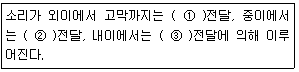
- ① 기체, ② 액체, ③ 고체
- ① 기체, ② 고체, ③ 액체
- ① 기체, ② 액체, ③ 액체
- ① 기체, ② 고체, ③ 고체
(정답률: 알수없음)
8. 공해진동에 관한 설명으로 옳지 않은 것은?
- 진동수의 범위는 1~90Hz 이다.
- 진동레벨은 80~130dB 정도가 많다.
- 사람의 건강 및 건물에 피해를 주는 진동이다.
- 사람이 느끼는 최소진동역치는 55±5dB 정도이다.
(정답률: 알수없음)
9. 수직보정곡선의 주파수 범위(f, Hz)가 4≤ f ≤ 8 일 때, 주파수 대역별 보정치의 물리량(m/s2)으로 옳은 것은?
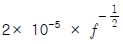
- 10-5
- 1.25 × 10-5
- 2× 10-5 × f
(정답률: 알수없음)
10. A공장 내 소음원에 대하여 소음도를 측정한 결과 각각 L1=88dB, L2=96dB, L3=100dB 이었다. 이 소음원을 동시에 가동시킬 때의 합성소음도는?
- 95dB
- 96dB
- 102dB
- 108dB
(정답률: 알수없음)
11. 음향출력 50W의 점음원으로부터 구형파가 전파될 때 이음원으로부터 8m지점의 음 세기레벨은?
- 108dB
- 111dB
- 120dB
- 123dB
(정답률: 알수없음)
12. 가로, 세로, 높이가 각각 5m인 실내의 1차원 모드의 고유진동수는? (단, 실내의 벽체는 모두 강벽이고, 공기의 온도는 20℃이다.)
- 17.2 Hz
- 21.5 Hz
- 34.3 Hz
- 42.9 Hz
(정답률: 알수없음)
13. 청력손실에 관한 설명으로 옳지 않은 것은?
- 청력손실이 옥타브밴드 중심주파수 500Hz ~ 2000Hz 범위에서 25dB이상이면 난청이라 한다.
- 청력이 정상인 사람의 최소가청치와 피검자의 최대 가청치와의 비를 dB로 나타낸 것이다.
- 영구적 청력손실은 4000Hz정도에서부터 진행된다.
- 평균청력손실은
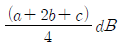
로 나타낼 수 있다. 여기서, a : 옥타브밴드 500Hz에서의 청력손실(dB), b : 옥타브밴드 1000Hz에서의 청력손실(dB), c : 옥타브밴드 2000Hz에서의 청력손실(dB)이다.
(정답률: 알수없음)
14. 잔향시간이란 실내에서 음원을 끈 순간부터 음압레벨이 얼마 감쇠되는데 소요되는 시간을 의미하는가?
- 40dB
- 60dB
- 80dB
- 100dB
(정답률: 알수없음)
15. 음과 관련한 법칙 및 용어설명으로 옳지 않은 것은?
- 백색잡음은 모든 주파수의 음압레벨이 일정한 음을 말한다.
- 옴-헬므홀츠법칙은 인간의 귀는 순음이 아니니 여러 가지 복잡한 파형의 소리도 각기의 순음의 성분으로 분해하여 들을 수 있다는 음색에 관한 법칙이다.
- 스넬의 법칙은 음의 회절과 관련한 법칙으로 장애물이 클수록 회절량이 크다.
- 웨버-훼이너법칙은 감각량은 자극의 대수에 비례한다는 법칙이다.
(정답률: 알수없음)
16. 벽체에 음파가 입사하면 음압의 강약에 의해 소밀파가 발생하는데, 이 때 입사파와 소밀파의 파장이 일치하면 벽체의 굴곡운동과 진폭은 입사파의 진폭과 같은 크기로 진동함으로써 차음성능이 현저하게 저하되는 현상을 일컫는 용어는?
- 질량효과
- 공명효과
- 일치효과
- 마스킹효과
(정답률: 알수없음)
17. 중심주파수가 500Hz일 때 1/1 옥타브밴드 분석기(정비형 필터)의 상한 주파수는?
- 약 710 Hz
- 약 760 Hz
- 약 810 Hz
- 약 860 Hz
(정답률: 알수없음)
18. 실내온도가 20℃, 가로 × 세로 × 높이가 5.7 × 7.8 × 5.2(m3)인 잔향실이 있다. 이 잔향실 내부에 아무것도 없는 상태에서 측정한 잔향시간이 9.5초이었다. 이 방에 3.1 × 3.7(m2)의 흡음재를 바닥에 설치한 후 잔향시간을 측정하니 2.7초 이었다. 이 흡음재의 흡음률은?
- 약 0.55
- 약 0.69
- 약 0.78
- 약 0.88
(정답률: 알수없음)
19. 음에 관한 걸명 중 가장 적합한 것은?
- 맥놀이는 주파수가 비슷한 두 소리가 간섭을 일으켜 보강간섭과 소멸간섭을 교대로 일으켜 주기적으로 소리의 강약이 반복되는 현상을 말한다.
- 각 음파들의 주파수가 같은 경우 위상차가 π/2보다 큰 경우 서로 보강되나, π/2보다 작은 경우에는 서로 상쇄되어, 음의 회절현상을 나타낸다.
- 정재파는 음압의 진폭이 최대점인 절(node)과 최소점인 복(loop)의 위치가 위상차이에 따라 유동적으로 변하는 경우를 뜻하며, 정상파라고도 한다.
- 음원이 반사면에 있는 공간에 놓이는 경우 입사파와 반사파의 회절작용으로 정재파가 나타나며 벽면 가까이에서는 음압의 절(node)이 나타난다.
(정답률: 알수없음)
20. 진동수 10Hz, 진동속도의 진폭이 5×10-3m/s인 정현진동의 진동가속도레벨(VAL)은? (단, 기준 10-5m/s2)
- 81dB
- 84dB
- 87dB
- 90dB
(정답률: 알수없음)
2과목: 소음방지기술
21. 팽창형 소음기에 관한 설명으로 가장 적합한 것은?
- 전파경로 상에 두 음의 간섭에 의해 소음을 저감시키는 원리를 이용한다.
- 고주파 대역에서 감음효과가 뛰어나다.
- 단면 불연속부의 음에너지 반사에 의해 감음된다.
- 감음주파수는 팽창부 단면적비에 의해 결정된다.
(정답률: 알수없음)
22. 다음 중 음향투과등급(STC)에 관한 설명으로 옳은 것은?
- 어떤 벽체의 STC값이 작다면 그 벽체의 차음성능은 우수하다.
- 모든 중심주파수에서의 음향투과손실과 STC 기준선 사이의 dB차이의 합이 32dB를 초과하면 안된다.
- 중심주파수 1KHz와 STC 기준선과 만나는 교점에서의 음향투과손실값이 피시험체의 STC값이 된다.
- 1/3 옥타브대역 중심주파수에 해당하는 음향투과손실중에서 하나의 값이라도 STC 기준선과 비교하여 최대차이가 5dB를 초과하면 안된다.
(정답률: 알수없음)
23. 다공질 재료의 흡음율에 관한 설명으로 옳지 않은 것은?
- 배후 공기층의 두께가 크게 되는 만큼 저주파수 영역의 흡음율이 높게 된다.
- 동일재료의 두께 증가와 더불어 중저음역의 흡음율이 크게 된다.
- 폴리에틸렌, 비닐 등 얇은 막 다공질 재료의 표면처리는 두께 0.03㎜ 정도로, 팽팽하지 않게 하여 붙인다.
- 동일 조건에서 주파수와 두께가 증가하면 흡읍율은 일반적으로 직선적으로 낮아지는 경향을 나타낸다.
(정답률: 알수없음)
24. 면밀도가 각각 10㎏/m2, 20㎏/m2으로 되어 있는 중공이중벽이 있다. 저음역 공명 주파수가 100Hz가 되도록 할 때 공기층의 간격은 얼마인가? (단, 두 벽의 면밀도가 다를 경우의 실용식을 이용하여 계산)
- 약 54㎜
- 약 75㎜
- 약 85㎜
- 약 96㎜
(정답률: 알수없음)
25. 20℃ 공기중의 음원 S에서 발생한 소리가 콘크리트벽(밀도ρ=2,300kg/m3, 영률 E=2.7×1010N/m2)에 수직입사 할 때, 이 벽체의 투과손실은?
- 29dB
- 37dB
- 51dB
- 59dB
(정답률: 알수없음)
26. 실내의 잔향시간 T, 실부피 V, 내부표면적 S, 평균흡음율 α와의 관계로 옳은 것은?
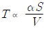
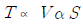
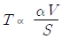
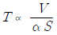
(정답률: 알수없음)
27. 단일벽에서 음파가 벽면에 수직입사 하고 있다. 벽체의 면밀도는 80kg/m2, 입사되는 주파수는 500Hz일 경우 벽면의 투과손실은? (단, ωm⨠ 2ρc인 경우)
- 39dB
- 49dB
- 54dB
- 69dB
(정답률: 알수없음)
28. 균질인 단일벽의 두께를 4배로 할 경우일치효과의 한계주파수의 변화로 옳은 것은? (단, 기타 조건은 일정)
- 원래의 1/4
- 원래의 1/2
- 원래의 2배
- 원래의 4배
(정답률: 알수없음)
29. 공장 내 두 벽과 바닥이 만나는 모서리에 90 dB의 소음을 유발하는 공기압축기가 있다. 이 공장의 내부체적은 200m3, 실내 전표면적은 220m2, 실내 평균흡음율은 0.4 일 때 공장 내에서 직접음과 잔향음이 같은 지점은 공기압축기로부터 얼마나 떨어져 있는가? (단, 공장 내 소음원은 공기압축기 1대로 가정한다.)
- 2.1m
- 4.8m
- 9.0m
- 11.5m
(정답률: 알수없음)
30. 방음벽 설계시 고려사항으로 가장 거리가 먼 것은?
- 점음원의 경우 방음벽의 길이가 높이의 5배 이상이면 길이의 영향은 고려하지 않아도 된다.
- 음원측 벽면은 될 수 있는 한 흡음처리하여 반사음을 방지하는 것이 좋다.
- 방음벽의 모든 도장은 전광택으로 반사율이 30 % 이하여야 하고, 방음벽의 높이가 일정할 때 음원과 수음점의 중간위치에 세우는 경우가 가장 효과적이다.
- 방음벽에 의한 현실적 최대 회절감쇠치는 점음원의 경우 24dB, 선음원의 경우 22dB 정도로 본다.
(정답률: 알수없음)
31. 산업기계에서 기류음에 의한 소음 방지대책으로 가장 거리가 먼 것은?
- 밸브를 다단화한다.
- 관의 곡률부위를 완화시킨다.
- 분출유속을 저감시킨다.
- 가진력을 억제시킨다.
(정답률: 알수없음)
32. 공장 실내의 총 표면적이 330m2, 평균 흡음율이 0.28이라면 실정수는?
- 116.3m2
- 128.3m2
- 143.8m2
- 152.5m2
(정답률: 알수없음)
33. 옥외에 있는 소음원에 대한 소음방지 대책으로 그다지 효과가 없는 것은 다음 중 어느 것인가?
- 소음원과 수음지점 사이의 거리를 멀리한다.
- 음원에 방향성이 있는 경우에는 그 방향을 바꾼다.
- 음원에 방음커버를 설치한다.
- 수음지점 바로 주위에 몇 그루의 나무를 심어서 차폐한다.
(정답률: 알수없음)
34. 크기가 5m × 3m인 창 외부로부터 음압레벨 100dB의 음이 입사되고 있다. 이 벽면의 투과손실이 25dB이고, 실내의 흡음력이 30m2일 때, 실내의 음맙레벨(dB)은?
- 70dB
- 74dB
- 78dB
- 82dB
(정답률: 알수없음)
35. 다음 중 흡음 덕트형 소음기에서 최대 감음 주파수의 범위로 가장 적합한 것은? (단, λ : 대상음 파장, D : 덕트 내경)
- λ/4 ＜ D ＜ 2λ
- λ/2 ＜ D ＜ λ
- 2λ ＜ D ＜ 4λ
- 4λ ＜ D ＜ 8λ
(정답률: 알수없음)
36. 단일벽의 일치 효과에 대한 설명으로 옳지 않은 것은?
- 벽체의 굴곡운동에 의해 발생한다.
- 벽체의 두께가 상승하면 일치효과 주파수는 상승한다.
- 벽체의 밀도가 상승하면 일치효과 주파수는 상승한다.
- 일치효과 주파수는 벽체에 대한 입사음의 각도에 따라 변동한다.
(정답률: 알수없음)
37. 소음 등의 제어를 위한 자재류의 기능에 관한 설명으로 가장 거리가 먼 것은?
- 소음기 : 기체의 비정상흐름에서 정상흐름으로 전환
- 차진재 : 구조적 진동과 진동 전달력 저감
- 흡음재 : 음에너지의 전환(음에너지가 적기 때문에 소량의 열에너지로 변환)
- 차음재 : 음에너지 감쇠
(정답률: 알수없음)
38. 소음기 성능표시방법 중 소음원에 소음기를 부착하기 전과 후의 공간상의 어떤 특정위치에서 측정한 음압레벨의 차와 그 측정위치로 정의되는 것은?
- 삽입손실치(IL)
- 감음량(NR)
- 투과손실치(TL)
- 감음계수(NRC)
(정답률: 알수없음)
39. 입구 및 팽창부의 직격이 각각 50㎝, 120㎝인 팽창형 소음기에 의해 기대할 수 있는 대략적인 최대투과손실치는? (단, 대상주파수는 한계주파수보다 작다.(f ＜ fc 범위))
- 약 10dB
- 약 20dB
- 약 30dB
- 약 40dB
(정답률: 알수없음)
40. 다음 중 실내 평균 흡음율을 구하는 방법에 해당하는 것은?
- 잔향시간 측정에 의한 방법
- 관내법
- TL 산출법
- 정재파법
(정답률: 알수없음)
3과목: 소음진동 공정시험 기준
41. 환경기준 중 소음 측정방법으로 가장 거리가 먼 것은?
- 소음계의 마이크로폰은 측정위치에 받침장치를 설치하지 않고 측정하는 것을 원칙으로 한다.
- 소음계의 마이크로폰은 주소음원 방향으로 향하도록 하여야 한다.
- 풍속이 2㎧이상일 때에는 반드시 마이크로폰에 방풍망을 부착하여야 한다.
- 진동이 많은 장소 또는 전자장(대형 전기기계, 고압선 근처 등)의 영향을 받는 곳에서는 적절한 방지책(방진, 차폐 등)을 강구하여야 한다.
(정답률: 알수없음)
42. 규제기준 중 생활진동 측정방법으로 옳지 않은 것은?
- 진동레벨계의 감각보정회로는 별도 규정이 없는 한 V특성(수직)에 고정하여 측정하여야 한다.
- 측정점은 피해가 예상되는 자의 부지경계선 중 진동레벨이 높을 것으로 예상되는 지점을 택하여야 한다.
- 진동픽업(Pick-up)의 설치장소는 옥외지표를 원칙으로 하고, 완충물이 없고, 충분히 다져서 단단히 굳은 장소로 하며, 수평면을 충분히 확보할 수 있는 장소로 한다.
- 측정시간 및 측정지점수는 피해가 예상되는 적절한 측정시각에서 1개의 측정지점을 선택하여 측정한 진동레벨을 측정진동레벨로 한다.
(정답률: 알수없음)
43. 소음계를 기본구조와 부속장치로 구분할 때 다음 중 기본구조에 해당되지 않는 것은?
- 동특성 조절기
- 지시계기
- 레벨레인지 변환기
- 표준음 발생기
(정답률: 알수없음)
44. 1일 동안의 평균 최고소음도가 92dB(A)이고, N1, N2, N3, N4 항공기 통과횟수가 각각 50, 300, 40, 10대 일 때, 1일 단위의 WECPNL은?
- 86
- 88
- 91
- 95
(정답률: 알수없음)
45. 다음 중 각 기준(한도)이 명시되어 있는 법령의 연결로 옳지 않은 것은?
- 소음환경기준 : 환경정책기본법 시행령
- 공장소음배출허용기준 : 소음진동관리법 시행규칙
- 도로교통진동한도 : 환경정책기본법 시행령
- 생활소음규제기준 : 소음진동관리법 시행규칙
(정답률: 알수없음)
46. 진동레벨계의 성능기준으로 옳은 것은?
- 진동픽업의 횡감도는 규정주파수에서 수감축 감도에 대한 차이가 15dB 이상이어야 한다.(연직특성)
- 레벨레인지 변환기가 있는 기기에 있어서 레벨레인지 변환기의 전환오차가 1dB 이내이어야 한다.
- 지시계기의 눈금오차는 1dB 이내이어야 한다.
- 측정가능 주파수 범위는 20~20000Hz 이상이어야 한다.
(정답률: 알수없음)
47. 진동레벨기록기를 사용하여 측정할 경우 기록지상의 지시치의 변동폭이 5dB 이내일 때 측정자료 분석이 다른 기준 또는 한도는?
- 도로교통진동한도
- 철도진동한도
- 생활진동규제기준
- 진동배출허용기준
(정답률: 알수없음)
48. 소음·진동공정시험기준상 “정상소음”의 정의로 옳은 것은?
- 시간적으로 변동폭이 일정한 소음을 말한다.
- 시간적으로 변동하지 아니하거나 또는 변동폭이 작은 소음을 말한다.
- 장애물 등 소음에 영향을 미치는 요소 없이 발생되는 소음을 말한다.
- 충격소음, 연속소음 외에 소음원으로부터 발생되는 소음을 말한다.
(정답률: 알수없음)
49. 다음은 소음도 기록기 또는 소음계만을 사용하여 측정할 경우 등가소음도 계산방법이다. ( )안에 알맞은 것은?
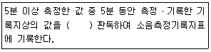
- 5초 간격으로 60회
- 10초 간격으로 30회
- 15초 간격으로 20회
- 20초 간격으로 10회
(정답률: 알수없음)
50. 다음은 규제기준 중 생활진동 측정방법 중 측정자료 분석방법이다. ( )안에 알맞은 것은?
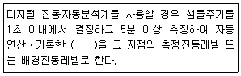
- 80% 범위의 상단치인 L10 값
- 80% 범위의 하단치인 L10 값
- 90% 범위의 상단치인 L10 값
- 90% 범위의 상단치인 L10 값
(정답률: 알수없음)
51. 규제기준 중 발파진동 평가를 위한 보정 시 보정값으로 옳은 것은? (단, N은 시간대별 보정발파횟수이다.
- (+5 log N : N ＞1)
- (+10 log N : N ＞1)
- (+20 log N : N ＞1)
- (+50 log N : N ＞1)
(정답률: 알수없음)
52. 진동 측정기기 중 지시계기의 눈금오차는 얼마 이내이어야 하는가?
- 0.5dB 이내
- 1dB 이내
- 5dB 이내
- 15dB 이내
(정답률: 알수없음)
53. 다음은 진동레벨계의 부속장치에 관한 설명이다. ( )안에 알맞은 것은?
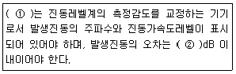
- ① 표준진동 발생기, ② ±1
- ① 표준진동 발생기, ② ±10
- ① 레벨레인지변환기, ② ±1
- ① 레벨레인지변환기, ② ±10
(정답률: 알수없음)
54. 철도소음한도 측정방법으로 옳지 않은 것은?
- 밤 시간대는 1회 1시간 동안 측정한다.
- 손으로 소음계를 잡고 측정할 경우 소음계는 측정자의 몸으로부터 0.5m 이상 떨어져야 한다.
- 소음계의 청감보정회로는 C특성에 고정하여 측정한다.
- 소음계의 동측성은 원칙적으로 빠름(fast)모드를 하여 측정한다.
(정답률: 알수없음)
55. 철도진동한도 측정자료 분석방법으로 가장 거리가 먼 것은?
- 열차통과시마다 최고진동레벨이 배경진동레벨보다 최소 5dB이상 큰것에 한하여 기록한다.
- 연속 10개 열차(상하행 포함)이상을 대상으로 최고진동레벨을 측정·기록한다.
- 열차의 운행횟수가 밤ㆍ낮 시간대별로 1일 50회 미만인 경우에는 측정열차수를 줄여 그 중 중앙값 이상을 산술평균한 값을 철도진동레벨로 할 수 있다.
- 기상조건, 열차의 운행횟수 및 속도 등을 고려하여 당해지역의 1시간 평균 철도 통행량 이상인 시간대에 측정한다.
(정답률: 알수없음)
56. 진동레벨계만으로 측정시 진동레벨을 읽는 순간에 지시침이 지시판 범위 위를 벗어날 때 그 발생빈도가 5회이었다. L10이 75dB(V)이라면 보정후 L10은?
- 75dB(V)
- 77dB(V)
- 78dB(V)
- 80dB(V)
(정답률: 알수없음)
57. 다음은 소음측정기기 중 지시계기에 관한 성능기준이다. ( )안에 들어갈 내용으로 가장 적합한 것은?
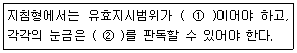
- ① 15dB이상, ② 0.5dB 이하
- ① 15dB이상, ② 1dB 이하
- ① 20dB이상, ② 0.5dB 이하
- ① 20dB이상, ② 1dB 이하
(정답률: 알수없음)
58. 다음은 배경소음 보정에 관한 내용이다. ( )안에 가장 적합한 것은?
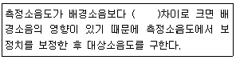
- 0.1 ~ 9.9 dB
- 1.0 ~ 9.9 dB
- 2.0 ~ 9.9 dB
- 3.0 ~ 9.9 dB
(정답률: 알수없음)
59. 진동레벨계만으로 측정할 경우 진동레벨을 읽는 순간에 지시침이 지시판 범위 위를 벗어날 때 그 발생빈도와 보정치 기준으로 옳은 것은?
- 발생빈도가 5회 이상이면 L10값에 2dB를 더해준다.
- 발생빈도가 6회 이상이면 L10값에 2dB를 더해준다.
- 발생빈도가 5회 이상이면 L10값에 3dB를 더해준다.
- 발생빈도가 6회 이상이면 L10값에 3dB를 더해준다.
(정답률: 알수없음)
60. 다음 중 발파진동 측정자료 평가표 서식에 명시되어 있지 않은 것은?
- 폭약의 종류
- 측정자의 소속, 성명
- 도로구조 및 교통특성
- 사업주 성명
(정답률: 알수없음)
4과목: 진동방지기술
61. 스프링정수 K1 = 80 N/m, K2 = 120 N/m인 두 스프링을 그림과 같이 직렬로 연결하고 질량 m = 3kg을 매달았을 때, 수직방향 진동의 고유 진동수는?
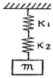
- 1/π Hz
- 2/π Hz
- 3/π Hz
- 4/π Hz
(정답률: 알수없음)
62. 지반진동 차단 구조물에 관한 설명으로 가장 거리가 먼 것은?
- 수동차단은 진동원에서 비교적 멀리 떨어져 문제가 되는 특정 수진 구조물 가까이 설치되는 경우를 말한다.
- 개방식 방진구는 굴착벽의 함몰로 시공깊이에 제약이 따른다.
- 공기층을 이용하는 개방식 방진구가 충진식 방진벽에 비해 파 에너지 차단(반사)특성이 크게 떨어진다.
- 방진구에서 가장 중요한 설계인자는 트랜치의 깊이로서 트랜치의 폭, 형상, 위치 등의 영향은 경미한 편이다.
(정답률: 알수없음)
63. 점성감쇠를 갖는 강제 진동계에서 최대진폭이 생기는 진동수비는? (단, ξ는 감쇠비이다.)
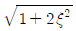
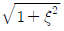
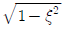
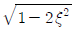
(정답률: 알수없음)
64. 발생메카니즘에 의한 분류 중 계수여진진동에 관한 설명으로 가장 적합한 것은?
- 대표적인 예는 바이올린 현의 진동이다.
- 회전하는 편평축의 진동, 왕복운동 기계의 크랭크축계의 진동도 계수여진진동에 해당한다.
- 단조기나 프레스 등에서 발생하는 진동으로 물체의 힘이나 충격에 의한 진동이다.
- 이 진동의 대책으로는 감쇠력을 제거하고, 강제진동수가 고유진동수의 2배로 되게 한다.
(정답률: 알수없음)
65. 기계 중량 1000N, 평균 코일직경 100㎜, 소선의 지름 20㎜, 재료의 전단 탄성율 80×103 N/mm2, 유효 권선의 수는 100 일 때, 이 코일스프링의 정적 수축량은?
- 55.5㎜
- 59.5㎜
- 62.5㎜
- 67.5㎜
(정답률: 알수없음)
66. 진동수의 크기가 ω2≤ωn2일 경우 응답진폭의 크기(x(ω))로 옳은 것은? (단, Ce 감쇠계수, ω강제각진동수, ωn고유각진동수)
- F0/k
- F0/mω2
- F0/Ceω
- F0/Ceω2
(정답률: 알수없음)
67. 금속스프링의 특징에 관한 설명으로 옳지 않은 것은?
- 환경요소에 대한 저항성이 큰 편이다.
- 로킹(roking)이 일어나지 않도록 주의해야 한다.
- 최대변위가 허용되며 저주파 차진에 좋다.
- 감쇠능력이 현저하여 공진시 전달율을 최소화 할 수 있다.
(정답률: 알수없음)
68. 전달력이 항상 외력보다 작기 때문에 차진이 유효한 영역으로 옳은 것은? (단, f: 외부에서 가해지는 강제진동수, fn : 고유진동수)
- f/fnh＜√2
- f/fnh＞√2
- f/fnh=√2
- f/fnh=1
(정답률: 알수없음)
69. 진동방지대책을 발생원대책, 전파경로대책, 수진대상대책으로 구분할 때, 다음 중 일반적으로 전파경로대책에 해당하는 것은?
- 완충지역 설치
- 진동전달감소장치 사용
- 기초의 질량 및 강성증가
- 건물구조 개조
(정답률: 알수없음)
70. 임계감쇠계수 Cc를 옳게 표시한 것은? (단, 감쇠비는 1, m: 질량, k: 스프링 정수, ωn: 고유각진동수)
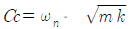
- Cc=2ωnㆍm
- Cc=2ωnㆍmk
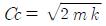
(정답률: 알수없음)
71. 비감쇠강제진동에서
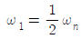
일 때의 정상상태의 진폭을 X1이라하면,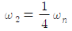
일 때의 정상상태 진폭 X2은?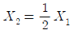
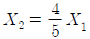
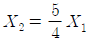
- X2=2X1
(정답률: 알수없음)
72. 다음은 감쇠비(ξ)가 어떤 조건을 만족할 때의 그림인가?
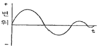
- ξ= 0
- 0 ＜ ξ＜ 1
- ξ= 1
- ξ＞ 1
(정답률: 알수없음)
73. 진동하는 금속면을 고무로 진동절연하여 진동의 감쇠량이 27dB가 되도록 하였다. 이 때 진동의 반사율은?
- 0.991
- 0.995
- 0.998
- 0.999
(정답률: 알수없음)
74. 그림과 같은 U자관내의 유체 운동은 자유진동으로 해석할 수 있다. 다음 중 유체운동의 주기는? (단, ℓ은 유체기둥의 길이이다.)
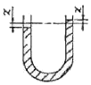
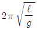
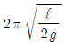
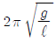
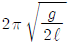
(정답률: 알수없음)
75. 진동원에서 1m 떨어진 지점의 진동레벨을 150dB라고 하면 10m 떨어진 지점의 진동레벨은? (단, 이 진동파는 표면파(n=0.5)이고, 지반전파의 감쇠정수 λ=0.⑤ 이다.)
- 136dB
- 1⑤dB
- 92dB
- 87dB
(정답률: 알수없음)
76. 다음은 어떤 감쇠에 관한 설명인가?
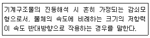
- 건마찰감쇠
- 점성감쇠
- 쿨롱감쇠
- 구조감쇠
(정답률: 알수없음)
77. 방진고무에 관한 설명으로 옳지 않은 것은?
- 내부감쇠저항이 적으므로 추가로 감쇠장치가 필요하다.
- 역학적 성질은 천연고무가 우수하지만 용도에 따라 합성고무도 사용된다.
- 내유성을 필요로 할 때에는 천연고무보다는 합성고무를 선정해야 한다.
- 설계 및 부착이 비교적 간결하고 금속과도 견고하게 접착할 수 있다.
(정답률: 알수없음)
78. 그림과 같이 단진자가 진동할 때 단진자의 고유진동수와의 관계로 옳은 것은? (단, 단진자의 길이는 l, 질량은 m, θ의 각도로 회전한다.)
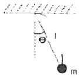
- 고유진동수는 m에 비례
- 고유진동수는 m에 반비례
- 고유진동수는 l의 제곱근에 반비례
- 고유진동수는 l에 반비례
(정답률: 알수없음)
79. 진동원에서 발생하는 가진력은 특성에 따라 기계회전부의 질량 불평형, 기계의 왕복운동 및 충격에 의한 가진력 등으로 대별되는데 다음 중 발생 가진력이 주로 충격에 의해 발생하는 것은?
- 단조기
- 전동기
- 송풍기
- 펌프
(정답률: 알수없음)
80. 비감쇠 강제진동의 전달율을 표시한 식으로 옳은 것은? (단, γ= 진동수비)
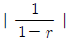
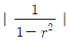
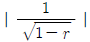
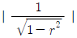
(정답률: 알수없음)
5과목: 소음진동 관계 법규
81. 소음진동관리법규상 환경기술인을 두어야 하는 경우 환경정책기본법에 따른 환경기술인의 교육기관으로 옳은 것은?
- 국립환경과학원
- 환경보전협회
- 국립환경인력개발원
- 환경관리인협회
(정답률: 알수없음)
82. 다음은 소음진동관리법규상 교육대상자의 선발 및 등록에 관한 사항이다. ( )안에 가장 적합한 것은?
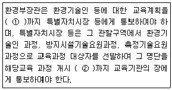
- ① 매년 11월 30일, ② 15일 전
- ① 매년 11월 30일, ② 30일 전
- ① 매년 1월 31일, ② 15일 전
- ① 매년 1월 31일, ② 30일 전
(정답률: 알수없음)
83. 소음진동관리법규상 소음발생건설기계의 소음도 검사성적서에 기재되는 인정내용으로 가장 거리가 먼 것은?
- 제작사
- 최소출력
- 제작국
- 음향파워레벨
(정답률: 알수없음)
84. 소음진동관리법규상 제작자동차의 배기소음허용기준(dB(A))으로 옳지 않은 것은? (단, 2006년 1월 1일 이후에 제작되는 자동차 기준)
- 소형 승용자동차 : 100 이하
- 대형 승용자동차(원동기출력 195마력 초과) : 1⑤ 이하
- 대형 화물자동차(원동기출력 97.5마력 이하) : 112 이하
- 이륜자동차(총배기량 80cc 이하) : 102 이하
(정답률: 알수없음)
85. 소음진동관리법규상 준공업지역의 시간대별 공장진동배출허용기준은?
- 낮 시간대 65dB(V) 이하
- 밤 시간대 65dB(V) 이하
- 낮 시간대 60dB(V) 이하
- 밤 시간대 60dB(V) 이하
(정답률: 알수없음)
86. 환경정책기본법령상 소음의 환경기준으로 옳은 것은?
- 낮 시간대 일반지역의 녹지지역 : 50 LeqdB(A)
- 낮 시간대 도로변지역의 녹지지역 : 50LeqdB(A)
- 밤 시간대 일반지역의 녹지지역 : 50LeqdB(A)
- 밤 시간대 도로변지역의 녹지지역 : 50LeqdB(A)
(정답률: 알수없음)
87. 소음진동관리법령상 인증을 면제할 수 있는 자동차에 해당하는 것은?
- 방송용 등 특수한 용도로 사용되는 자동차로서 환경부장관이 정하여 고시하는 자동차
- 외국에서 1년 이상 거주한 내국인이 주거를 이전하기 위하여 이주물품으로 반입하는 1대의 자동차
- 관세법 규정에 따라 공매되는 자동차로서 환경부장관이 정하여 고시하는 자동차
- 주한 외국군인 또는 그 가족이 사용하기 위하여 반입하는 자동차
(정답률: 알수없음)
88. 소음진동관리법규상 생활진동 규제기준 중 발파진동의 경우 보정기준으로 옳은 것은?
- 주간에만 규제기준치에 +5dB을 보정한다.
- 주간에만 규제기준치에 +10dB을 보정한다.
- 야간에만 규제기준치에 +5dB을 보정한다.
- 야간에만 규제기준치에 +10dB을 보정한다.
(정답률: 알수없음)
89. 소음진동관리법규상 자동차제작자의 권리·의무의 승계를 신고하고자 하는 자는 그 신고사유가 발생한 날부터 최대 며칠 이내에 인증서 원본과 그 승계 사실을 증명하는 서류 등을 환경부장관에게 제출하여야 하는가?
- 10일 이내
- 15일 이내
- 30일 이내
- 60일 이내
(정답률: 알수없음)
90. 소음진동관리법상 환경부장관은 법에 의한 인증을 받아 제작한 자동차의 소음이 제작차 소음허용기준에 적합한지의 여부를 확인하기 위하여 대통령령으로 정하는 바에 따라 검사를 실시하여야 하는데, 이 때 검사에 드는 비용은 누가 부담하는가?
- 국가
- 지방자치단체
- 자동차제작자
- 검사기관
(정답률: 알수없음)
91. 소음진동관리법규상 소음배출시설기준으로 옳비 않은 것은? (단, 마력기준시설 및 기계·기구)
- 10마력 이상의 압축기(나사식 압축기는 50마력 이상으로 한다.)
- 10마력 이상의 연탄제조용 윤전기
- 20마력 이상의 목재가공기계
- 20마력 이상의 공작기계
(정답률: 알수없음)
92. 소음진동관리법규상 운행자동차의 경적소음허용기준으로 옳은 것은? (단, 2006년 1월 1일 이후에 제작되는 자동차로서 경자동차 기준)
- 100dB(C) 이하
- 1⑤dB(C) 이하
- 110dB(C) 이하
- 112dB(C) 이하
(정답률: 알수없음)
93. 소음진동관리법규상 특별시장 등이 점검결과 운행차의 소음덮개를 떼어버린 경우로서 그 자동차 소유자에게 운행차 개선명령을 하려는 경우, 그 개선에 필요한 기간은 개선명령일부터 며칠로 하는가?
- 5일
- 7일
- 10일
- 14일
(정답률: 알수없음)
94. 소음진동관리법상 사용되는 용어의 뜻으로 옳지 않은 것은?
- 교통기관 : 기차·자동차·전차·도로 및 철도 등을 말한다. 다만, 항공기와 선박은 제외
- 진동 : 기계·기구·시설, 그 밖의 물체의 사용으로 인하여 발생하는 강한 흔들림
- 방진시설 : 소음·진동배출시설이 아닌 물체로부터 발생하는 진동을 없애거나 줄이는 시설로서 환경부령으로 정하는 것
- 소음발생건설기계 : 건설공사에 사용하는 기계 중 소음이 발생하는 기계로서 국토교통부령으로 정하는 것
(정답률: 알수없음)
95. 소음진동관리법규상 자동차의 종류기준에 관한 사항으로 옳지 않은 것은? (단, 2006년 1월 1일부터 제작되는 자동차 기준)
- 경자동차는 주로 적은 수의 사람 또는 화물을 운송하기에 적합하게 제작된 것으로서 엔진배기량 1,000cc 미만이다.
- 이륜자동차에는 옆 차붙이 이륜자동차 및 이륜차에서 파생된 3륜 이상의 최고속도 50km/h를 초과하는 이륜자동차를 포함한다.
- 전기를 주동력으로 사용하는 자동차는 차량총중량이 1.5톤 미만에 해당되는 경우에는 경자동차로 구분한다.
- 이륜자동차는 주로 1명 또는 2명 정도의 사람을 운송하기에 적합하게 제작된 것으로서 엔진배기량 100cc 이상 및 빈 차 중량 1톤 미만을 말한다.
(정답률: 알수없음)
96. 소음진동관리법규상 생활소음의 규제기준 중 아침시간대의 기준으로 옳은 것은?
- ⑤:00 ~ 07:00
- ⑤:00 ~ 08:00
- 06:00 ~ 09:00
- 06:00 ~ 08:00
(정답률: 알수없음)
97. 소음진동관리법규상 공사장 방음벽시설 설치기준으로 옳은 것은?
- 방음벽시설 전후의 소음도 차이(삽입손실)는 최소 5dB 이상되어야 하며, 높이는 2m 이상되어야 한다.
- 방음벽시설 전후의 소음도 차이(삽입손실)는 최소 7dB 이상되어야 하며, 높이는 2m 이상되어야 한다.
- 방음벽시설 전후의 소음도 차이(삽입손실)는 최소 5dB 이상되어야 하며, 높이는 3m 이상되어야 한다.
- 방음벽시설 전후의 소음도 차이(삽입손실)는 최소 7dB 이상되어야 하며, 높이는 3m 이상되어야 한다.
(정답률: 알수없음)
98. 소음진동관리법규상 가전제품을 제조하는 사업자 등은 환경부장관이 실시하는 소음도 검사를 받아 저소음기준에 적합한 경우에는 저소음표지를 부착할 수 있는데, 이 저소음표지의 규격(크기)기준으로 옳은 것은?
- 50㎜ × 50㎜
- 60㎜ × 60㎜
- 70㎜ × 70㎜
- 80㎜ × 80㎜
(정답률: 알수없음)
99. 소음진동관리법규상 생활소음·진동이 발생하는 공사로서 “환경부령으로 정하는 특정공사” 기준에 해당하는 공사가 아닌 것은? (단, 특정공사의 사전신고대상기계ㆍ장비를 5일 이상 사용하는 공사를 대상으로 한다.)
- 총연장이 100미터 이상 또는 굴착 토사량의 합계가 100 세제곱미터 이상인 굴정공사
- 연면적이 1천제곱미터 이상인 건축물의 건축공사 및 연면적이 3천제곱미터 이상인 건축물의 해체공사
- 면적 합계가 1천제곱미터 이상인 토공사(土工事)ㆍ정지공사(整地工事)
- 구조물의 용적 합계가 1천제곱미터 이상 또는 면적합계가 1천제곱미터 이상인 토목건설공사
(정답률: 알수없음)
100. 소음진동관리법규상 진동배출시설기준으로 옳지 않은 것은? (단, 동력을 사용하는 시설 및 기계ㆍ기구로 한정한다.)
- 20마력 이상의 프레스(유압식은 제외한다.)
- 30마력 이상의 단조기
- 30마력 이상의 목재가공기계
- 30마력 이상의 연탄제조용 윤전기
(정답률: 알수없음)
음의 세기 = (점음원의 출력) / (4π × 거리2)
여기서, 점음원의 출력은 0.45W이고, 거리는 10m이다.
음의 세기 = (0.45) / (4π × 102) = 7.16 × 10-4
따라서, 정답은 "7.16 × 10-4"이다.